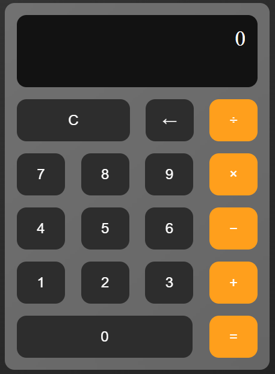

Youtube Clone
A responsive front-end replica of YouTube’s main interface built with HTML, CSS, and JavaScript. It mimics key UI elements including the video grid layout, sidebar navigation, search functionality, and responsive design for different screen sizes. Ideal for practicing layout structuring and component-based styling visual comfort.